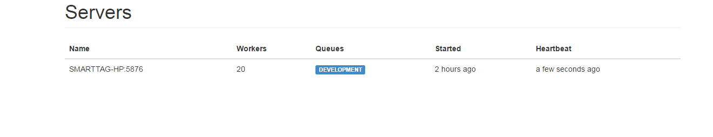

For mvc hangfire is configure via the Startup.cs Configuration method
using Hangfire;
// ...
public void Configuration(IAppBuilder app)
{
GlobalConfiguration.Configuration.UseSqlServerStorage("connection string or its name");
app.UseHangfireDashboard();
app.UseHangfireServer();
}
You can open the dash board by navigating to http://your-site/hangfire. I use this for seeing job status and debugging issues with jobs
Every running instance will create a server with queues
Its important to note if your job uses local resource they will need to be accessible from the server the jobs is running on
Hangfire can process multiple queues. In order to assure your job is process on the same queue as your server include a options object when setting up hangfire in the Startup.cs
I've setup my instance with a preprocessor to create a different queue based on development or production
#if DEBUG
// debug mode use dashboard and set queue to a unique queue
GlobalConfiguration.Configuration
.UseSqlServerStorage("Hangfire")
.UseDashboardMetric(SqlServerStorage.ActiveConnections)
.UseDashboardMetric(SqlServerStorage.TotalConnections)
.UseDashboardMetric(DashboardMetrics.FailedCount);
app.UseHangfireDashboard();
var options = new BackgroundJobServerOptions
{
Queues = new[] { "development"}
};
app.UseHangfireServer(options);
#else
// release mode dont' use dashboard and set queue to support
GlobalConfiguration.Configuration
.UseSqlServerStorage("Hangfire")
var options = new BackgroundJobServerOptions
{
Queues = new[] { "support"}
};
app.UseHangfireServer(options);
#endif
The hangfire library allow us to process jobs in the background safe from any app domain shutdowns
Jobs Type:
Running jobs on a specific queue is a simple as provinding the Queue("") attribute
#if DEBUG
public const string queue = "development";
#else
public const string queue = "support";
#endif
[Queue(queue)]
public void DummyJob()
{
System.Threading.Thread.Sleep(500);
}
SignalR is a websockets framework build for .Net
The most common use of SignalR is using the Hubs
Hubs provide a abstraction for groups, topics and defining methods that both server and client can use
// Server
public class NotificationHub : Hub
{
public override Task OnConnected()
{
string name = Context.User.Identity.Name;
Groups.Add(Context.ConnectionId, name);
return base.OnConnected();
}
public void SendNotificationMessage(NotificationMessage message)
{
Clients.Caller.SendNotificationMessage(message);
}
}
// Client
var notificationHub = $.connection.notificationHub;
if ($.connection.hub && $.connection.hub.state === $.signalR.connectionState.disconnected) {
$.connection.hub.start()
.done(function (state) {
// websocket up and running!
});
}
notificationHub.client.sendNotificationMessage = function (message) {
// message received use it!
};
/